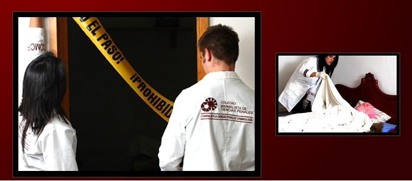
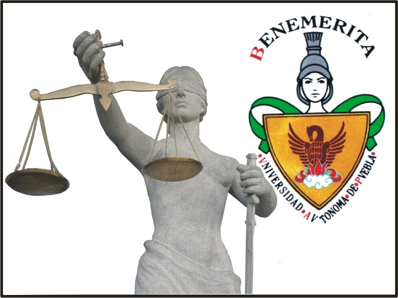

Universidades
 1
1-
Heoico colegio militar
Toca para ver la Información
-
COMCIPE
Toca para ver la Información
-
BUAP
Toca para ver la Información
- Ser mexicano o mexicana por nacimiento y no haber adquirido o adquirir otra nacionalidad.Ser soltero o soltera, sin descendencia, no vivir en concubinato y permanecer en esta situación hasta el término de sus estudios.
- Contar con Certificado o Constancia de Estudios de Bachillerato o equivalente, con promedio aprobatorio (el establecido a nivel nacional) y reconocimiento oficial.
- Aprobar el Examen Cultural obteniendo una PUNTUACIÓN MÍNIMA DE 120 PUNTOS equivalente a 6 (seis) de calificación.
- En relación con el párrafo anterior, quedar dentro de la cuota de admisión que establezca la Secretaría de la Defensa Nacional, la cual se encuentra sujeta a las plazas presupuestales que autoriza la Secretaría de Hacienda y Crédito Público.
- En el concepto que el presentar y aprobar todos los exámenes del proceso de Admisión, NO GARANTIZA EL INGRESO AL PLANTEL PARA EL CUAL CONCURSÓ, ya que las becas de estudio que se otorgan están condicionadas a las plazas presupuestales autorizadas por la Secretaría de Hacienda y Crédito Público.
- Estatura e Índice de Masa Corporal (I.M.C.).
- El personal que por primera vez ingresará al Ejército y Fuerza Aérea Mexicanos a través de un Plantel de Educación Militar, deberá reunir los siguientes requisitos en cuanto a la estatura y el Índice de Masa Corporal (I.M.C.)
- Para el Heroico Colegio Militar, Escuela Militar de Ingenieros, Escuela Médico Militar, Escuela Militar de Enfermeras, Escuela Militar de Odontología, Escuela Militar de Oficiales de Sanidad, Escuela Militar de Transmisiones, Escuela Militar de Especialistas de Fuerza Aérea y Escuela Militar de Mantenimiento y Abastecimiento.
- Estatura Mínima.
- Personal Masculino 1.63 m.
- Personal Femenino. 1.60 m
- Índice de Masa Corporal personal masculino y femenino. (25 Kg/m2)
Realizado por:
WENDY KARINA RIVERA MARTINEZ
Centro de Bachillerato Tecnologico Industrial y del Servicios no.16
CBTis.16
4° "H"
Wendy Karina Rivera Martinez
Escuela Militar de Enfermeras.
Cada enfermera militar egresada posee las virtudes fundamentales que caracterizan a las Fuerzas Armadas del país, la disciplina, el honor y el valor con una sólida formación académica.
Misión.
Formar Enfermeras Militares mediante la implementación de un modelo educativo, acorde con los avances científicos y tecnológicos que garantice la excelente preparación profesional y ética, que traduzca en una atención humanista y de calidad a los integrantes del Instituto Armado, sus derechohabientes y miembros de la sociedadVisión.
Constituirse en una Institución Educativa Militar de tipo superior, reconocida a nivel nacional e internacional, formadora de líderes profesionales de enfermería, que ofrezca a las discentes y sus egresadas áreas de oportunidad para el desarrollo y atención de enfermería, coadyuvando al crecimiento del Instituto Armado y al progreso del país
Objetivo.
Formar Oficiales Licenciadas en Enfermería Militar con conocimientos científicos, humanísticos, éticos y tecnológicos que les permitan proporcionar atención integral de enfermería al paciente, así como, desarrollar funciones administrativas, de gestión, educativas y de investigación en los escalones sanitarios del servicio de sanidad y en las actividades derivadas de las misiones generales del Ejército y Fuerza Aérea Mexicanos, en el área preventiva, curativa y de rehabilitación.
Requisitos de admisión.
Edad Mínima para: Heroico Colegio Militar, Escuela Militar de Aviación, Escuela Militar de Ingenieros, Escuela Médico Militar, Escuela Militar de Enfermeras, Escuela Militar de Odontología, Escuela Militar de Oficiales de Sanidad, Escuela Militar de Transmisiones, Escuela Militar de Especialistas de Fuerza Aérea, Escuela Militar de Mantenimiento y Abastecimiento. 18 años, cumplidos al 31 de diciembre del año en el que participa. Edad Máxima para: Heroico Colegio Militar y Escuela Militar de Aviación. 20 años, 11 meses y 30 días, al 31 diciembre del año en el que participa
WKRM
Criminalística
La criminalistica nos ayuda a contruir, con seguridad,un hecho delictuaso con el objeto de identificar al infractor, por ello es necesario y en primer lugar, preservar y conservar el lugar de los hechos o lugar de hallaszgo, precepto fundamental en la investigacion criminal.
Al terminar la Licenciatura en Criminalística tendrás habilidad de desarrollar estudios de los elementos objetivos de un ilícito (Armas de fuego, balas, huellas dactilares, sangre, autenticidad de escrito y firmas, valuar el daño patrimonial, lesiones, factores de vialidad en un accidente, tanatología, medicina forense entre otros). La Licenciatura en Criminalística te da la opción de que utilices laboratorios actualizados y que desarrolles de manera presencial la forma de realizar peritajes, con maestros altamente capacitados y reconocidos en instituciones de gobierno y laboratorios nacionales e internacionales.
click para ver mas informacion
WKRM
DERECHO
Perfil de Ingreso
El aspirante al Plan de Estudios de la Licenciatura en Derecho, deberá contar con conocimientos en el área de las ciencias sociales y humanas; con habilidades para la reflexión crítica, el análisis, la síntesis, la lectura, la expresión oral y escrita, y la utilización de los medios de información y comunicación; así como actitudes y valores orientados a la justicia social y el respeto a los derechos humanos.
Perfil de Egreso
El egresado del plan de estudios de la Licenciatura en Derecho conocerá, interpretará y aplicará a través de la argumentación oral y escrita la norma jurídica en la solución de casos concretos; desarrollará investigaciones innovadoras que contribuyan al fortalecimiento del Estado democrático y social de derecho y coadyuven a la solución de problemas sociales; contará con una formación integral inter y multidisciplinaria sustentada en principios éticos, humanísticos y científicos; y comprometido con el desarrollo sustentable para lograr un mejor nivel de vida.
Campo de Trabajo
El egresado del Plan de Estudios tiene un amplio campo de ejercicio profesional. En esta perspectiva destacan la asesoría, representación y defensa de intereses en asuntos litigiosos; la función pública (poderes ejecutivo, legislativo y judicial); el autoempleo (firmas, despachos y/o consultorías jurídicas); la participación en la dirección de empresas nacionales o extranjeras; la docencia e investigación científica del Derecho.
cilc para mas informacion